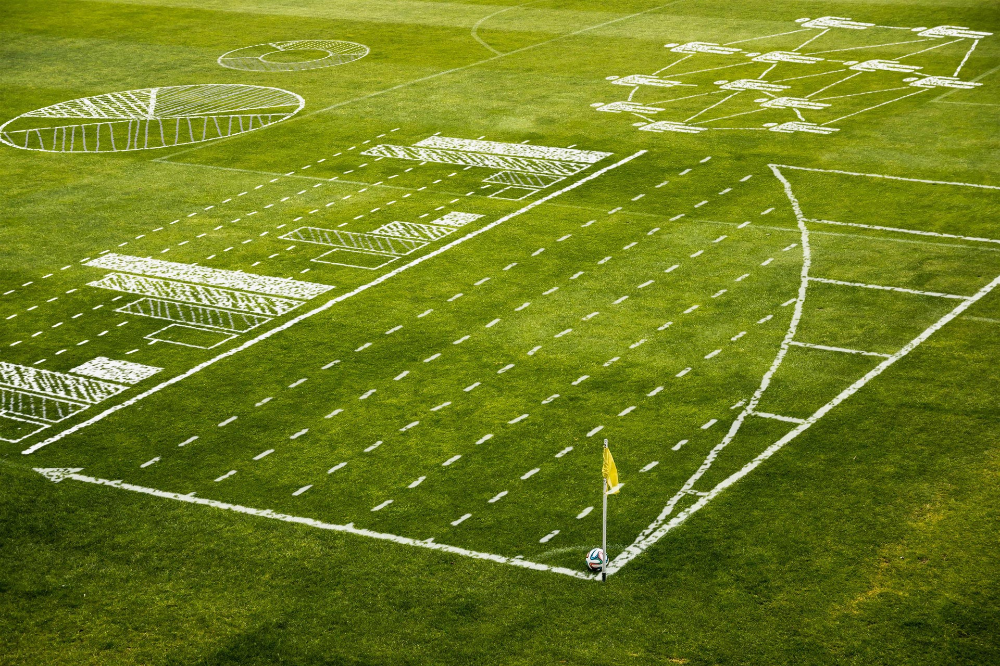

Document Name
Words: 2613
Characters: 15896
Markdown
Toggle Zen ModePreview
Toggle ModeBIG DATA ORIENTADA AL FUTBOL
BORIONI, Emiliano
Fecha de entrega: 12/04/2018
Profesores: GUIGNARD, Javier y PALACIOS, Pablo

Introducción
Big data o macro datos, hadoop que es una herramienta para poder manejar estos datos y como se utilizan los mismos en conjunto en el fútbol. En este documento se dejara plasmado todo el marco teórico de la exposición oral. La misma se encontrara dividida basándose en las diapositivas con las que cuenta el Prezi.
Información
Big data o datos a gran escala, es un concepto que hace
referencia a un conjunto de datos tan grandes que aplicaciones
informáticas tradicionales de procesamiento de datos no son suficientes
para tratar con ellos y los procedimientos usados para encontrar
patrones repetitivos dentro de esos datos. Los macro datos usan textos
imágenes, audio y vídeo. También completan pedazos pedidos a través de
la fusión de datos.
La premisa que cumplen estos datos es la denominada regla de las 3 V.
Volumen: la cantidad de datos generados y guardado.
Variedad: el tipo y naturaleza de los datos para ayudar a las personas a
analizar los datos y usar los resultados de forma eficaz.
Velocidad: en este contexto, la velocidad a la cual se generan y
procesan los datos para cumplir las exigencias y desafíos de su
análisis.
Veracidad: la calidad de los datos capturados puede variar mucho y así afectar a los resultados del análisis.
Hadoop
Hadoop es un sistema de código abierto creado por Google que se
utiliza para almacenar, procesar y analizar grandes volúmenes de datos.
Esta solución, que posteriormente se denominará Hadoop, se basa en un
gran número de pequeños ordenadores, cada uno de los cuales se encarga
de procesar una porción de información. La grandiosidad del sistema es
que, a pesar de que cada uno de ellos funciona de forma independiente y
autónoma, todos actúan en conjunto, como si fueran un solo ordenador de
dimensiones increíbles.
Características básicas de Hadoop
HDFS: Consiste en un sistema de archivo distribuido. que permite que el
fichero de datos no se guarde en una única máquina sino que sea capaz de
distribuir la información a distintos dispositivos.
Organiza la información en muchos cluster en los cuales se encuentra
replicada la información por si alguno se cae siga existiendo la
información
MAPREDUCE: Se trata de un framework de trabajo que hace posible aislar
al programador de todas las tareas propias de la programación en
paralelo. Es decir, permite que un programa que ha sido escrito en los
lenguajes de programación más comunes, se pueda ejecutar en un cluster
de Hadoop.
Es una palabra compuesta deriva de map que significa la acción de si
queremos buscar un parámetro, palabra, valor, columna, estadística se
encarga de agarrar toda la información y dividirla en la cantidad de pc
(clusters) que tenemos disponibles y que cada uno se encarga de analizar
esa información agilizando los tiempos y reduciéndolo proporcionalmente
a la cantidad de clusters que tenemos
Reduce es la forma en la cual el programa agarra los datos previamente
analizados por los clusters y los une a todos para mostrar el resultado
esperado por el usuario, app o programador.
Este ejemplo de MapReduce es un proceso para contar las apariciones de cada palabra en un conjunto de documentos:
map(String name, String document):
// clave: nombre del documento
// valor: contenido del documento
for each word w in document:
EmitIntermediate(w, 1);
La función map() en este caso divide un documento en palabras (es decir lo tokeniza) mediante el empleo de un simple analizador léxico, y emite una serie de tuplas de la forma (clave, valor) donde la clave es la palabra y el valor es “1”. Es decir, por ejemplo, del documento “La casa de la pradera” la función map retornaría: (“la”, “1”), (“casa”, “1”), (“de”, “1”), (“la”, “1”), (“pradera”, “1”).
reduce(String word, Iterator partialCounts):
// word: una palabra
// partialCounts: una [[Iterador (patrón de diseño)|lista parcial]] para realizar cuentas agregadas
int result = 0;
for each v in partialCounts:
result += ParseInt(v);
Emit(result);
Aquí, cada documento es dividido en palabras, y cada palabra se cuenta con valor inicial “1” por la función Map, utilizando la palabra como el resultado clave. El framework reúne todos los pares con la misma clave y se alimenta a la misma llamada Reduce, por lo tanto, esta función sólo necesita la suma de todos los valores de su entrada para encontrar el total de las apariciones de esa palabra. En el ejemplo anterior (“la”, “1”) aparece dos veces debido a que la clave “la” tiene dos ocurrencias, el resto de claves sólo aparece una vez.
Tecnología
Datos estructurados: datos que tienen bien definidos su longitud y
su formato, como las fechas, los números o las cadenas de caracteres.
Se almacenan en tablas. Un ejemplo son las bases de datos relacionales y
los almacenes de datos.
Datos no estructurados: datos en el formato tal y como fueron
recolectados, carecen de un formato específico. No se pueden almacenar
dentro de una tabla ya que no se puede desgranar su información a tipos
básicos de datos. Algunos ejemplos son los PDF, documentos multimedia,
correos electrónicos o documentos de texto.
Datos semi estructurados: datos que no se limitan a campos determinados,
pero que contiene marcadores para separar los diferentes elementos. Es
una información poco regular como para ser gestionada de una forma
estándar. Estos datos poseen sus propios meta datos semi estructurados
que describen los objetos y las relaciones entre ellos, y pueden acabar
siendo aceptados por convención. Como ejemplos tenemos los archivos tipo
hojas de cálculo, HTML, XML o JSON.
Información
• Planificación y prevención de lesiones, fatigas, desgaste, etc.
• En Inglaterra obligan a los clubes a tener dentro de su estructura matemáticos de datos.
• Análisis de patrones y tendencias en parámetros básicos:desempeño
atlético (velocidad, aceleración), la posición de los jugadores y sus
movimientos, la tenencia del balón, etc. Y, de esta manera, detectar los
parámetros críticos de mejora en base a referencias de juego.
• Modelos predictivos de juego, remate y gol: la empresa Oulala Games
tiene un modelo matemático que, empleando datos de la empresa Opta
(hablaremos de ella más adelante), permite a un club disponer de un
sistema predictivo de los factores que llevan a obtener el mejor
resultado de un jugador. Juegan con un total de 70 variables para
obtener 275 posibles acciones a realizar con las que ganar o perder
puntos.
• Modelo de propensión a la lesión o fatiga:si un equipo es capaz de
detectar los factores que mejor predicen una lesión, podrá evitarlos a
futuro con un modelo que lo detecte con carácter preventivo. A más de un
equipo, que a estas alturas ha rotado poco, le podría venir muy bien.
• Análisis individual vs. global del equipo: no olvidemos que como
juego de equipo que es, lo importante es el análisis global del
equipo, en la estrategia global. Es lo que se ha bautizado como el
“eventing”, secuencias que miden los pases buenos, las pérdidas de
balón, remates, goles, faltas, tarjetas, tenencia y similares, que
permiten ver la contribución de cada jugador al equipo y viceversa.
Esto, con grafos, ya se ha hecho en varias ocasiones para las
selecciones y enfrentamientos clave (como la final del Mundial entre
España y Holanda). De esta manera, la adecuación de jugadores a equipos y
viceversa -como le encanta al Cholo Simeone-, resulta más fácil.
• Simulación de jugadas y enfrentamientos: cruzando todo este conjunto
de variables y datos de los que estamos reiteradamente hablando, un
equipo puede disponer de un simulador de posibles jugadas y
enfrentamientos, con los que afrontar de la mejor manera posible cada
partido. La personalización del juego y el equipo en función del rival.
• Valoración de jugadores en mercado: más allá de ejercicios “amateurs”
como los que he podido hacer yo en el caso de Aymeric Laporte, aquí hay
modelos realmente sofisticados. Como decíamos antes, el Arsenal dispone
de una herramienta propia para ello. Y hay bastantes rumores que el
acierto de Monchi en el Sevilla, se debe a lo mismo.
• Factores Críticos de Éxito: una de mis historias preferidas en cuanto
al análisis de factores de triunfo de un equipo es el de la selección
Alemania de fútbol durante el Mundial. La actual campeona del mundo,
implantó un sistema global de Big Data que le permitió tomar decisiones
sobre qué factores eran los que la hacían producir mejores resultados.
Se dieron cuenta que, por ejemplo, reducir el tiempo de posesión a poco
más de un segundo (de los 3,5 segundos en los que estaba).
• Detección de talento: en 2011, la película Moneyball narró la historia
de Billy Beane, director técnico de un modesto equipo de béisbol que en
2001 empezó a utilizar la estadística para detectar jugadores poco
valorados en mercado, pero con grandes probabilidades de hacer grandes
cosas. Desde entonces, el fútbol se ha llenado de herramientas y bases
de datos estadísticas como Opta Sports -que ya trabajar con el Sevilla,
Valencia o FC Barcelona, entre otros- o Transfermarkt, que ponen a
disposición de los clubes datos para hacer eso mismo. Supongo que ya lo
estarán empleando, pero dada su sensibilidad y la ventaja competitiva
que ganan, entiendo no lo divulgarán mucho.
Datos
Se estima que en solo 10 minutos de juego se generan cerca de
siete millones de datos. En los 90 minutos de un partido se pueden
generar, analizar y comparar más de 60 millones de cifras. Tal cantidad
sería casi imposible de digerir por un ser humano. Lo que hace el
programa es adaptarla a un sistema de visualización que sea entendible
por el entrenador. En la tableta ve la cantidad de pases realizados por
un jugador, su efectividad (y mucho más) e incluso puede saber los datos
que se generan en el equipo rival.
El proyecto demandará una inversión de 110 millones de euros.
Esto lo logran con tecnología propia SAP HANA (incluye recolección de
data, almacenamiento en la nube y análisis veloz) y el entrenador puede
ver mientras sus jugadores están en el terreno de juego, datos como la
velocidad a la que corren en el campo, los metros que han recorrido o la
posición exacta de su línea de defensa.
Aseguran que con este sistema los entrenadores pueden sacar mayor
rendimiento a sus jugadores ya que optimiza la forma en que los
gestiona. También sirve para analizar a posteriori el partido y
compararlo con cientos de juegos pasados.
Alemania tuvo menos posesión de pelota, Brasil atacó más y los dos
tuvieron una cantidad similar de remates al arco, pero la velocidad de
los pases fue clave.
La información se recoge fundamentalmente a través de dos vías: sensores
que los jugadores se colocan en pecho y piernas, y sistemas pasivos de
cámaras de vídeo ubicadas alrededor del campo que graban todo el
partido.
El entrenador alemán pudo analizar, por ejemplo, estadísticas acerca del
tiempo promedio de posesión de la pelota por parte del equipo. Y
lograron reducirla de 3,4 segundos a cerca de 1,1.
En la pantalla no sólo se ven cifras, sino que también se ofrece una
imagen del campo en 3D, una perspectiva distinta a la que se puede
apreciar desde la cámara de la televisión o al ras del suelo. Con este
tipo de reproducción se puede controlar mejor los movimientos y la
ubicación de los deportistas.
Técnicos
Ariel Holan: Técnico con carrera relativamente corta, viene del
hockey, emplea un método innovador de trabajo para el fútbol argentino,
su cuerpo técnico esta compuesto por 21 personas (Preparador físico,
entrenador de arqueros, ayudante de campo pasando por analista de video,
encargado de monitores y gps) ademas de contar con drones que
sobrevuelan los entrenamientos.
Claudio Ranieri: Intachable labor en clubes de renombre tales como
Atlético de Madrid, Chelsea, Valencia, Juventus, Roma, Inter de Milan,
Leicester, dentro de su extensa carrera se destaca el campeonato de liga
obtenido con el Leicester por ser un equipo modesto de bajo presupuesto
el cual llego a obtener el éxito gracias a un proceso enorme de big
data para selección de estrellas tales como Vardy o Kante, fue el equipo
que menos jugadores utilizo 23 frente a 33 del Manchester United.
Joachim Löw: Técnico de la selección alemana, todos lo recordaran por
estas graciosas imágenes pero lo que realmente es este gran técnico
visionario e innovador es, comenzar un proceso en 2006 sucediendo a
Klinsmann luego de la eliminación de local en el mundial, empezó un
proceso a largo plazo en el cual la base fue un trabajo de selección de
nuevos talentos, formación de los ya existentes y la implementación de
un nuevo sistema de juego, todo esto fue factible gracias al uso del big
data, en el camino recorrido se encuentran 3º puesto mundial 2010,
campeón mundial 2014, clasificación como mejor equipo dentro de su zona
en las 3 eliminatorias disputadas (93,33% de efectividad, no perdió
partidos), sub campeón euro copa y 2 semifinales, campeón copa
confederaciones 2017. 83% efectividad.
Sevilla: Implemento un proceso a largo plazo en 2006 con Juande Ramos
(técnico mas ganador en la historia del Sevilla) el cual fue seguido por
Manolo Gimenez y posteriormente por Unai Emeri (actual dt del PSG), en
el mismo se lograron realizar traspasos históricos como los antes
mencionados y la obtención de 5 UEFA Europa League 2005-06, 2006-07,
2013-14, 2014-15, 2015-16, Supercopa de Europa 2006, Copa de Europa
2006, Copa del Rey 2006-07, Supercopa de España 2007 y 4 subcampeonatos
Supercopa de Europa 2007,20014,2015 y 2016.
Conclusión
Conclusión I
El gran potencial que reviste esta tecnología creo que quedo mas que demostrado con los diversos ejemplos anteriores tanto en grandes presupuestos como en modestos y que es una gran herramienta para poder hacer rendir muchísimo mas el presupuesto y de esta manera poder potenciar grandes virtudes individuales como colectivas y corregir falencias, tácticas, físicas, conceptuales, etc. El mismo se puede ver en la prevención de lesiones, cuidado de sobrecargas musculares, etc. Se pueden realizar simulaciones de posibles situaciones de juego en relacion al rival de turno que se tenga al frente y de esta manera encarar de una manera muchísimo mas personalizada la planificación semanal en base a virtudes y defectos propios tanto como del rival.
Conclusión II
Esta conclusión esta orientada mucho mas al programador/equipo de desarrollo y no al uso de la misma o del cliente, por esto se realiza fundamental hincapié en la toma inicial de requerimiento y de esta forma poder marcar los limites del sistema ya que como apreciamos anteriormente se puede realizar un sistema de proporciones extremadamente grandes, por eso también es necesario explicitar con el cliente que área desea abordar (mercados, rendimientos de jugadores, falencias o virtudes técnico/tácticas, etc). Analizar el tipo de datos que vamos a utilizar para elegir el motor que mas se adapte a nuestras necesidades y no generar problemas de compatibilidad de datos.
Conclusión III (Costo – Beneficio)
La utilización de esta tecnología no asegura campeonatos ni el descubrimiento del próximo Diego Armando Maradona o el próximo Bilardo, Bielsa, Mourinho, pero lo que si nos ayuda es a reducir el error frente a los desafíos que debemos enfrentar ya que contamos con datos y estadísticas 100% objetivas y verificables en la realidad y siempre mientras mas datos tengamos a la hora de tomar una decisión nos ayudara fallar menos que si no tenemos ningún dato a nuestro alcance. Cabe remarcar también que influyen millones de factores externos al juego como lo puede ser la hora, el clima, la cancha, el arbitro, el publico, e terreno de juego, etc. Variables aleatorias que ningún sistema podría predecir ni calcular que podrán modificar en mayor o menor medida nuestras estimaciones, pero las mismas tampoco serán completamente opuestas a las que nuestro sistema pre establezca.